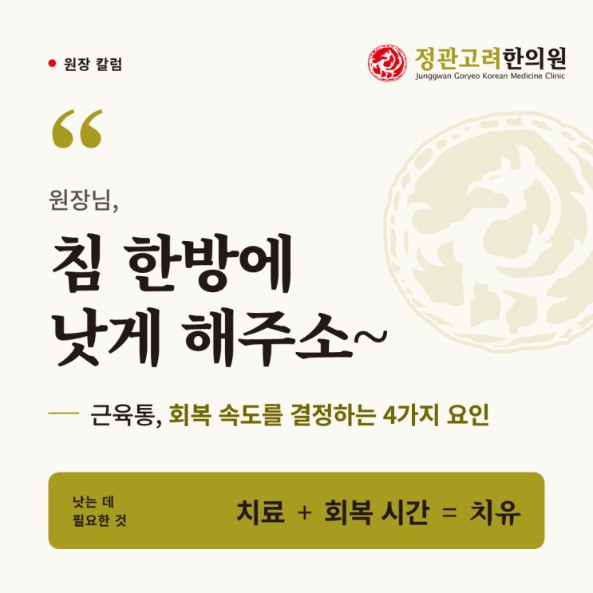
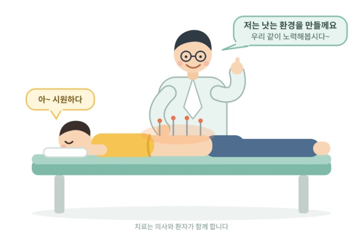
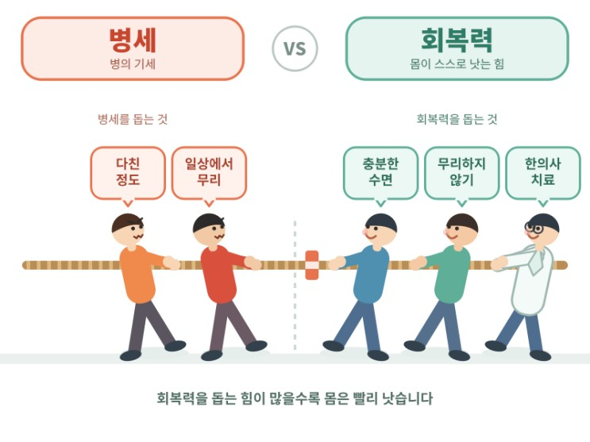

"침 한방에 낫게 해주소~" 근육통 회복 속도를 결정하는 네가지 요인
이 글에서 알 수 있는 내용
- 치료와 치유는 어떻게 다를까요
- 근육통 회복 속도를 결정하는 네 가지 요인
- 빨리 낫기 위해 환자와 한의사가 함께 할 일

안녕하세요~ 정관고려한의원 원장 박장우 입니다.
진료실에서 가끔 환자분들께 듣는 말이 있습니다.
"원장님, 빨리 낫게 해주소~"
"원장님, 침 한방에 낫게 해주소~"
그러면 저는 웃으면서 이렇게 대답합니다.
"아이고, 사람 치료하는 게 어디 기계 고치는 거랑 같나요.
뚝딱뚝딱 손본다고 바로 낫는 게 아입니더~~^^"
오늘은 제가 진료실에서 환자분들께 자주 드리는 이야기를 쉬운 글로 풀어봤습니다.

기계 수리와 몸의 치료, 무엇이 다를까요?
고장난 기계는 수리가 끝나면 그걸로 끝입니다.
하지만 우리 몸이 나으려면 두 가지가 필요합니다.
바로 치료(수리)와 회복 시간입니다.
또 하나 다른 점이 있습니다.
기계는 누가 고쳐 주지 않으면 스스로 고쳐지지 않습니다.
그런데 우리 몸에는 스스로 낫는 힘, 자연치유력이 있습니다.
그렇다면 가만히 두면 낫는데 치료는 왜 받을까요?
치료는 몸이 스스로 낫는 힘을 잘 발휘하도록 돕고, 회복을 앞당겨 주기 때문입니다.
피부 상처로 생각해 볼게요
기계에 흠집이 나면 수리하는 그 자리에서 바로 매끈해집니다.
하지만 손에 상처가 나면, 치료를 받았다고 그 자리에서 마술처럼 싹 아물지는 않죠.
상처를 소독하고 꿰매는 것은 치료입니다.
그 뒤에 새 살이 차오르며 아무는 것은 치유입니다.
같은 상처라도 살성이 좋은 분은 금방 아물고, 그렇지 못한 분은 더디 아물죠.
간단히 요약하면,
치료는 낫는 길을 열어 드리는 것이고, 그 길을 걸어 낫는 것은 환자분의 몸입니다.
근육통이 낫는 속도는 무엇이 결정할까요?
근육통도 마찬가지입니다.
같은 치료를 받아도 빨리 나으시는 분이 있고, 조금 더디 나으시는 분이 있습니다.
그 차이를 만드는 것은 크게 네 가지입니다.
1우선, 다친 정도입니다.
- 잠깐 무리한 뒤 생긴 가벼운 근육통인지,
- 근육이 파열된 것인지(대표적으로 종아리 근파열),
- 같은 부위에 부담이 반복되면서 통증이 오래 이어진 것인지
에 따라 회복 속도는 달라집니다.
그리고 허리의 경우, 디스크나 협착증 때문에 생긴 허리근육통은 더 오래 갑니다.
2두 번째, 일상에서 얼마나 조심하느냐 입니다.
치료받는 시간은 길어야 1시간입니다.
나머지 23시간은 환자분의 일상입니다.
치료받고 나서 무거운 짐을 들거나, 한 자세로 오래 앉아 있거나, 아픈데도 무리해서 운동하시면 회복되던 근육을 다시 혹사시키는 셈이 됩니다.
상처에 밴드를 붙이고 가만히 두면 빨리 나을 것을, 자꾸 건드리고 흙 묻히고 하면 상처가 오래가고 덧나겠죠?
근육도 똑같습니다.
3세 번째, 몸의 회복력입니다.
상처가 아무는 속도가 사람마다 다르듯, 근육이 회복되는 속도도 사람마다 다릅니다.
나이, 체질, 평소 건강 상태, 당뇨 같은 지병에 따라 회복이 빠르기도 하고 더디기도 합니다.
4네 번째가 의사(한의사)의 역할입니다.
저는 저의 역할을 코치에 비유합니다.
운동선수 옆에서 코치가 대신 뛰어줄 수는 없습니다.
하지만 자세를 잡아주고, 컨디션을 살피고, 힘을 더 낼 수 있게 도와줍니다.
침, 전자뜸, 부항, 약침, 한약 등은 모두 몸이 스스로 회복하는 힘을 끌어올리도록 돕는 도구입니다.
근육통을 빨리 낫게 하려면 이렇게 합시다.

저는 질병 상태를 극복하는 과정을 위의 그림과 같이 병세와 회복력(치유력) 사이의 줄다리기라고 생각합니다.
그래서 근육통의 빠른 회복을 위해서는 환자와 의사의 협력이 필요합니다.
앞서 살펴봤던 회복속도를 좌우하는 네 가지 요인들 중,
우리가 어찌할 수 없는 것은 첫번째 다친 정도입니다.
이건 이미 일어난 일이니 되돌릴 수는 없습니다.
- 환자 입장할 게 없습니다.
- 의사 입장원인이 무엇인지 진단하여 앞으로의 경과를 예측해 줄 수 있습니다.
나머지 세가지 요인은 환자와 의사가 힘을 합쳐 긍정적인 방향으로 이끌 수 있습니다.
- 의사치료를 통해, 회복하기 좋은 상태를 만들어 환자의 치유력(회복력)을 돕습니다.
- 환자분'일상에서 무리하지 않음'을 지켜 병세가 진행되지 않도록 합니다.
허리 근육통의 경우, 예를 들면 이런 것들입니다.
- 무거운 물건 드는 일, 갑자기 허리를 숙이거나 비트는 동작, 격한 운동 등은 당분간 쉬어 주세요.
- 오래 앉아 계실 때는 중간중간 일어나 가볍게 몸을 풀어 주세요.(505법칙)
- 환자분또한 충분한 수면을 취함으로써 치유력(회복력)을 올릴 수 있습니다.
우리 몸은 잠을 자는 동안 손상된 조직을 활발히 복구합니다.
평소보다 1~2시간 일찍 주무시거나, 그 이상 더 주무시는 것도 치유에 아주 많은 도움이 됩니다.
정리하며
몸을 기계처럼 생각해서 "수리했으니(치료했으니) 이제 끝"이라고 여기시면 안 됩니다.
우리 몸은 살아 숨쉬는 생명체입니다.
부품을 갈아 끼우면 그 자리에서 복구가 끝나는 기계와는 다릅니다.
- 의사(한의사)가 하는 치료와,
- 환자분이 몸의 치유를 위해 일상에서 주의하면서 회복력을 높이기 위해서 하는 노력들.
이 두 가지가 함께 할 때 회복도 한결 빨라집니다.
ps. 저도 마음 같아서는 정말 침 한방에 낫게 해 드리고 싶습니다...TT;;
하지만 빠른 회복은 결국 의사와 환자분이 함께 만들어 가는 거랍니다.
한의학박사 · 한방재활의학과 전문의 박장우